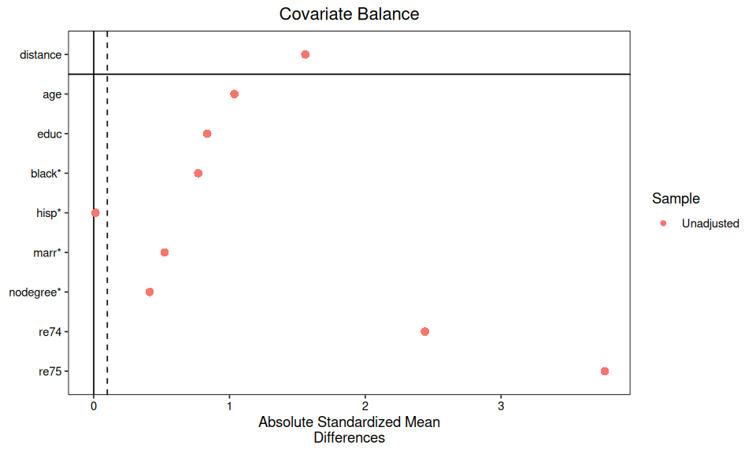
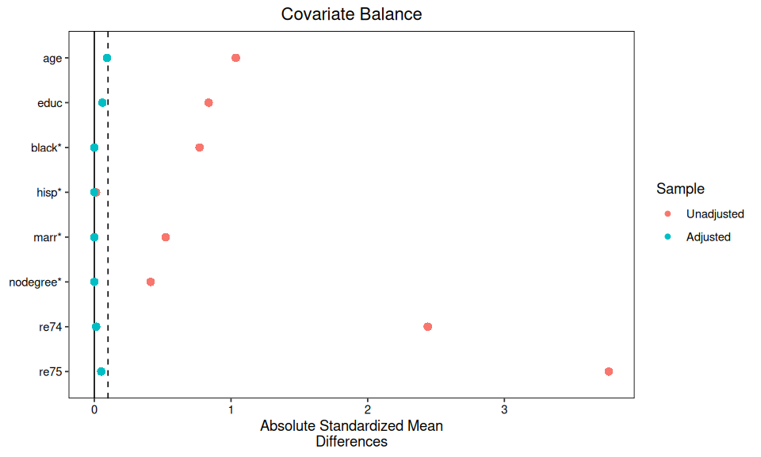
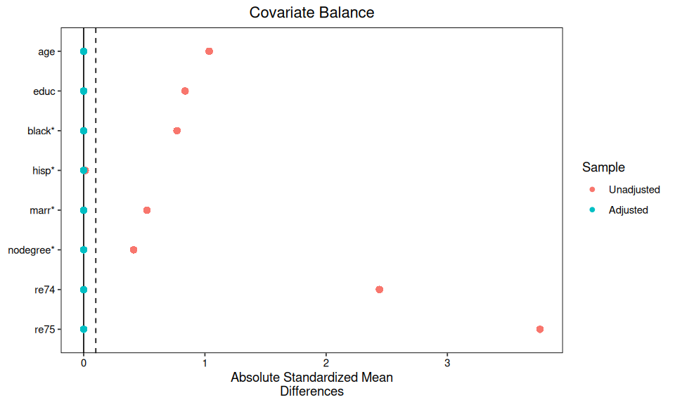

Lab: NSW and CPS Benchmark#
Use the R kernel. Keep the supplied data/ folder beside this notebook. Run cells in order after installing the documented R environment. Data loading is entirely local.
How To Use This Page#
Use this page as a guided benchmark worksheet.
Read the benchmark framing before running any model.
Run each design branch in order: raw, exact, CEM, entropy balancing.
Track retention, balance, and benchmark gap together.
Treat the experimental NSW estimate as the reference target.
Code is shown but not executed when this page is rendered. That keeps the page readable even if your local R library is incomplete.
Training Goal#
This lab focuses on one practical question:
Can observational adjustment recover the known NSW experimental result when the control pool comes from CPS?
In Causal Inference: The Mixtape, this example matters because it sits inside a longer debate about whether matching and propensity-score methods can recover credible programme effects from observational data. The NSW experiment gives a randomized benchmark, while the CPS comparison pool creates the harder observational problem. That makes the exercise more than a coding drill: it is a direct test of whether a design built on observed covariates can get back to something close to the experimental answer.
The workflow mirrors the main report’s design-first sequence:
define the estimand
isolate benchmark versus observational datasets
diagnose raw imbalance and overlap
compare exact matching, CEM, and entropy balancing
evaluate each estimate against the experimental benchmark
Dataset At A Glance#
We use two causaldata datasets:
nsw_mixtape: treated and control units from the National Supported Work Demonstration (NSW) job-training experimentcps_mixtape: observational controls drawn from the Current Population Survey (CPS)
Acronyms And Background#
NSW = National Supported Work Demonstration. This was a U.S. randomized employment and training demonstration used as a benchmark in later causal-inference comparisons.
Background and evaluation context: MDRC summary report (1980), LaLonde (1986), American Economic Review metadata.CPS = Current Population Survey. This is the monthly household labor-force survey jointly run by the U.S. Census Bureau and the U.S. Bureau of Labor Statistics.
Official background: Census CPS program page, BLS CPS overview.
Dataset Provenance For This Lab#
nsw_mixtapedocumentation and variable definitions: CRAN reference (445rows,11variables).cps_mixtapedocumentation and variable definitions: CRAN reference (15,992rows,11variables).The benchmark-comparison framing (NSW experiment versus observational controls) is tied to: Dehejia and Wahba (1998/1999) NBER working-paper version and its published JASA article listed there.
Why This Example Matters In The Mixtape#
The Mixtape uses the NSW setting to illustrate a core matching problem: a randomized study can tell us what the programme did in the experimental sample, but analysts often have to work with non-experimental control groups in practice. LaLonde’s comparison between the experimental NSW estimate and observational alternatives made this dataset a benchmark case because many standard non-experimental estimators performed poorly against the experimental result. Later work, especially Dehejia and Wahba, argued that design choices such as covariate selection and propensity-score-based adjustment could do better.
For study purposes, the important context is:
NSW gives the benchmark because treatment and control were randomly assigned inside that sample.
CPS gives the observational challenge because those controls were not randomized against the NSW treated group.
The exercise is therefore not “estimate a treatment effect from scratch.” It is “see how close different observational designs get to a reference effect that is already available from the experiment.”
This is why balance, overlap, retained sample size, and benchmark gap should all be interpreted together.
Core setup:
experimental benchmark:
ATTfrom NSW treated versus NSW controlsobservational design: NSW treated versus CPS controls
outcome:
re78(post-program earnings)covariates:
age,educ,black,hisp,marr,nodegree,re74,re75
Step 1: Load Packages And Build Analysis Datasets#
options(repr.plot.width = 8, repr.plot.height = 4.8)
data_helpers <- c("data/load-data.R", "../data/load-data.R", "docs/labs/data/load-data.R")
data_helpers <- data_helpers[file.exists(data_helpers)]
if (!length(data_helpers)) stop("Extract the complete lab ZIP, including its data folder, before running.")
source(data_helpers[[1]])
options(repr.plot.width = 8, repr.plot.height = 4.8)
required_packages <- c(
"MatchIt",
"WeightIt",
"cobalt",
"dplyr",
"ggplot2"
)
missing_packages <- required_packages[!vapply(
required_packages,
requireNamespace,
logical(1),
quietly = TRUE
)]
if (length(missing_packages) > 0) {
stop("Install the documented R environment first; missing: ", paste(missing_packages, collapse=", "), call.=FALSE)
}
invisible(lapply(required_packages, library, character.only = TRUE))
nsw <- qed_data("nsw_mixtape") |>
mutate(
treat = as.integer(treat),
outcome = re78
)
cps <- qed_data("cps_mixtape") |>
mutate(
treat = as.integer(treat),
outcome = re78
)
# Experimental benchmark sample: NSW treated + NSW controls.
benchmark_dat <- nsw
# Observational sample: NSW treated + CPS controls.
obs_dat <- bind_rows(
nsw |> filter(treat == 1L) |> mutate(source = "NSW treated"),
cps |> filter(treat == 0L) |> mutate(source = "CPS controls")
)
design_covariates <- c("age", "educ", "black", "hisp", "marr", "nodegree", "re74", "re75")
obs_dat |>
select(source, treat, outcome, all_of(design_covariates)) |>
glimpse()
cobalt (Version 4.6.2, Build Date: 2026-01-29)
Attaching package: ‘cobalt’
The following object is masked from ‘package:MatchIt’:
lalonde
Attaching package: ‘dplyr’
The following objects are masked from ‘package:stats’:
filter, lag
The following objects are masked from ‘package:base’:
intersect, setdiff, setequal, union
Rows: 16,177
Columns: 11
$ source <chr> "NSW treated", "NSW treated", "NSW treated", "NSW treated", "…
$ treat <int> 1, 1, 1, 1, 1, 1, 1, 1, 1, 1, 1, 1, 1, 1, 1, 1, 1, 1, 1, 1, 1…
$ outcome <dbl> 9930.0459, 3595.8940, 24909.4492, 7506.1460, 289.7899, 4056.4…
$ age <dbl> 37, 22, 30, 27, 33, 22, 23, 32, 22, 33, 19, 21, 18, 27, 17, 1…
$ educ <dbl> 11, 9, 12, 11, 8, 9, 12, 11, 16, 12, 9, 13, 8, 10, 7, 10, 13,…
$ black <dbl> 1, 0, 1, 1, 1, 1, 1, 1, 1, 0, 1, 1, 1, 1, 1, 1, 1, 1, 1, 1, 1…
$ hisp <dbl> 0, 1, 0, 0, 0, 0, 0, 0, 0, 0, 0, 0, 0, 0, 0, 0, 0, 0, 0, 0, 0…
$ marr <dbl> 1, 0, 0, 0, 0, 0, 0, 0, 0, 1, 0, 0, 0, 1, 0, 0, 0, 0, 0, 0, 0…
$ nodegree <dbl> 1, 1, 0, 1, 1, 1, 0, 1, 0, 0, 1, 0, 1, 1, 1, 1, 0, 1, 0, 0, 1…
$ re74 <dbl> 0, 0, 0, 0, 0, 0, 0, 0, 0, 0, 0, 0, 0, 0, 0, 0, 0, 0, 0, 0, 0…
$ re75 <dbl> 0, 0, 0, 0, 0, 0, 0, 0, 0, 0, 0, 0, 0, 0, 0, 0, 0, 0, 0, 0, 0…
Checkpoint:
Is the benchmark estimate coming only from NSW randomized groups?
Is the observational sample restricted to NSW treated plus CPS controls?
Step 2: Compute The Experimental Benchmark#
options(repr.plot.width = 8, repr.plot.height = 4.8)
benchmark_summary <- benchmark_dat |>
group_by(treat) |>
summarise(
n = n(),
mean_re78 = mean(outcome, na.rm = TRUE),
mean_re74 = mean(re74, na.rm = TRUE),
mean_re75 = mean(re75, na.rm = TRUE),
.groups = "drop"
) |>
mutate(group = if_else(treat == 1L, "NSW treated", "NSW controls")) |>
select(group, n, mean_re78, mean_re74, mean_re75)
benchmark_fit <- lm(outcome ~ treat, data = benchmark_dat)
benchmark_att <- coef(summary(benchmark_fit))["treat", ]
benchmark_summary
benchmark_att
| group | n | mean_re78 | mean_re74 | mean_re75 |
|---|---|---|---|---|
| <chr> | <int> | <dbl> | <dbl> | <dbl> |
| NSW controls | 260 | 4554.801 | 2107.027 | 1266.909 |
| NSW treated | 185 | 6349.144 | 2095.574 | 1532.055 |
- Estimate
- 1794.3423818501
- Std. Error
- 632.853392414366
- t value
- 2.83532079207887
- Pr(>|t|)
- 0.00478753002103074
This treat coefficient is the reference effect we try to recover with observational adjustment.
Step 3: Raw Observational Estimate (NSW Treated Vs CPS Controls)#
options(repr.plot.width = 8, repr.plot.height = 4.8)
raw_summary <- obs_dat |>
group_by(treat) |>
summarise(
n = n(),
mean_re78 = mean(outcome, na.rm = TRUE),
mean_age = mean(age, na.rm = TRUE),
mean_educ = mean(educ, na.rm = TRUE),
prop_black = mean(black == 1, na.rm = TRUE),
mean_re74 = mean(re74, na.rm = TRUE),
mean_re75 = mean(re75, na.rm = TRUE),
.groups = "drop"
) |>
mutate(group = if_else(treat == 1L, "NSW treated", "CPS controls")) |>
select(group, n, mean_re78, mean_age, mean_educ, prop_black, mean_re74, mean_re75)
raw_fit <- lm(outcome ~ treat, data = obs_dat)
raw_obs_att <- coef(summary(raw_fit))["treat", ]
raw_summary
raw_obs_att
| group | n | mean_re78 | mean_age | mean_educ | prop_black | mean_re74 | mean_re75 |
|---|---|---|---|---|---|---|---|
| <chr> | <int> | <dbl> | <dbl> | <dbl> | <dbl> | <dbl> | <dbl> |
| CPS controls | 15992 | 14846.660 | 33.22524 | 12.02751 | 0.07353677 | 14016.800 | 13650.804 |
| NSW treated | 185 | 6349.144 | 25.81622 | 10.34595 | 0.84324324 | 2095.574 | 1532.055 |
- Estimate
- -8497.51614813295
- Std. Error
- 712.020720199282
- t value
- -11.9343663843865
- Pr(>|t|)
- 1.07480321449658e-32
Compare this raw observational estimate with the benchmark from Step 2.
Step 4: Baseline Balance And Overlap Diagnostics#
options(repr.plot.width = 8, repr.plot.height = 4.8)
m_raw <- matchit(
treat ~ age + educ + black + hisp + marr + nodegree + re74 + re75,
data = obs_dat,
method = NULL,
estimand = "ATT"
)
summary(m_raw, un = TRUE)
cobalt::bal.tab(
m_raw,
un = TRUE,
binary = "std",
m.threshold = 0.1
)
cobalt::love.plot(
m_raw,
abs = TRUE,
thresholds = c(m = 0.1),
stars = "raw"
)
Call:
matchit(formula = treat ~ age + educ + black + hisp + marr +
nodegree + re74 + re75, data = obs_dat, method = NULL, estimand = "ATT")
Summary of Balance for All Data:
Means Treated Means Control Std. Mean Diff. Var. Ratio eCDF Mean
distance 0.2706 0.0084 1.5587 15.3107 0.5065
age 25.8162 33.2252 -1.0355 0.4196 0.1863
educ 10.3459 12.0275 -0.8363 0.4905 0.0908
black 0.8432 0.0735 2.1171 . 0.7697
hisp 0.0595 0.0720 -0.0532 . 0.0126
marr 0.1892 0.7117 -1.3342 . 0.5225
nodegree 0.7081 0.2958 0.9068 . 0.4123
re74 2095.5737 14016.8004 -2.4396 0.2607 0.4591
re75 1532.0553 13650.8035 -3.7645 0.1206 0.4751
eCDF Max
distance 0.8149
age 0.3427
educ 0.4123
black 0.7697
hisp 0.0126
marr 0.5225
nodegree 0.4123
re74 0.6031
re75 0.6509
Sample Sizes:
Control Treated
All 15992 185
Matched 15992 185
Unmatched 0 0
Discarded 0 0
Balance Measures
Type Diff.Un M.Threshold.Un
distance Distance 1.5587
age Contin. -1.0355 Not Balanced, >0.1
educ Contin. -0.8363 Not Balanced, >0.1
black Binary 2.1171 Not Balanced, >0.1
hisp Binary -0.0532 Balanced, <0.1
marr Binary -1.3342 Not Balanced, >0.1
nodegree Binary 0.9068 Not Balanced, >0.1
re74 Contin. -2.4396 Not Balanced, >0.1
re75 Contin. -3.7645 Not Balanced, >0.1
Balance tally for mean differences
count
Balanced, <0.1 1
Not Balanced, >0.1 7
Variable with the greatest mean difference
Variable Diff.Un M.Threshold.Un
re75 -3.7645 Not Balanced, >0.1
Sample sizes
Control Treated
All 15992 185
{kind=link}

options(repr.plot.width = 8, repr.plot.height = 4.8)
# Quick propensity-score overlap check.
ps_fit <- glm(
treat ~ age + educ + black + hisp + marr + nodegree + re74 + re75,
data = obs_dat,
family = binomial()
)
obs_dat <- obs_dat |>
mutate(ps = predict(ps_fit, type = "response"))
overlap_bounds <- obs_dat |>
group_by(treat) |>
summarise(
min_ps = min(ps, na.rm = TRUE),
max_ps = max(ps, na.rm = TRUE),
.groups = "drop"
)
common_support_low <- max(overlap_bounds$min_ps)
common_support_high <- min(overlap_bounds$max_ps)
overlap_summary <- obs_dat |>
group_by(treat) |>
summarise(
n = n(),
min_ps = min(ps, na.rm = TRUE),
p10_ps = quantile(ps, 0.10, na.rm = TRUE),
p50_ps = quantile(ps, 0.50, na.rm = TRUE),
p90_ps = quantile(ps, 0.90, na.rm = TRUE),
max_ps = max(ps, na.rm = TRUE),
in_common_support = mean(ps >= common_support_low & ps <= common_support_high),
.groups = "drop"
) |>
mutate(group = if_else(treat == 1L, "NSW treated", "CPS controls")) |>
select(group, n, min_ps, p10_ps, p50_ps, p90_ps, max_ps, in_common_support)
overlap_summary
| group | n | min_ps | p10_ps | p50_ps | p90_ps | max_ps | in_common_support |
|---|---|---|---|---|---|---|---|
| <chr> | <int> | <dbl> | <dbl> | <dbl> | <dbl> | <dbl> | <dbl> |
| CPS controls | 15992 | 3.765001e-06 | 4.569906e-06 | 0.0001420737 | 0.009124844 | 0.4883897 | 0.3611806 |
| NSW treated | 185 | 7.016468e-04 | 1.060993e-02 | 0.2568346059 | 0.478896543 | 0.4874457 | 1.0000000 |
Questions:
Which covariates are most imbalanced before adjustment?
How much treated-support mass lies in thin CPS-support regions?
Step 5: Exact Matching Branch#
options(repr.plot.width = 8, repr.plot.height = 4.8)
m_exact <- matchit(
treat ~ black + hisp + marr + nodegree + educ,
data = obs_dat,
method = "exact",
estimand = "ATT"
)
summary(m_exact, un = TRUE)
exact_dat <- match.data(m_exact)
exact_dat |>
count(treat) |>
mutate(group = if_else(treat == 1L, "Treated", "Control"))
cobalt::bal.tab(
m_exact,
data = obs_dat,
un = TRUE,
binary = "std",
m.threshold = 0.1,
addl = ~ age + re74 + re75
)
Call:
matchit(formula = treat ~ black + hisp + marr + nodegree + educ,
data = obs_dat, method = "exact", estimand = "ATT")
Summary of Balance for All Data:
Means Treated Means Control Std. Mean Diff. Var. Ratio eCDF Mean
black 0.8432 0.0735 2.1171 . 0.7697
hisp 0.0595 0.0720 -0.0532 . 0.0126
marr 0.1892 0.7117 -1.3342 . 0.5225
nodegree 0.7081 0.2958 0.9068 . 0.4123
educ 10.3459 12.0275 -0.8363 0.4905 0.0908
eCDF Max
black 0.7697
hisp 0.0126
marr 0.5225
nodegree 0.4123
educ 0.4123
Summary of Balance for Matched Data:
Means Treated Means Control Std. Mean Diff. Var. Ratio eCDF Mean
black 0.8432 0.8432 0 . 0
hisp 0.0595 0.0595 0 . 0
marr 0.1892 0.1892 0 . 0
nodegree 0.7081 0.7081 0 . 0
educ 10.3459 10.3459 0 1.0038 0
eCDF Max Std. Pair Dist.
black 0 0
hisp 0 0
marr 0 0
nodegree 0 0
educ 0 0
Sample Sizes:
Control Treated
All 15992. 185
Matched (ESS) 604.83 185
Matched 9600. 185
Unmatched 6392. 0
Discarded 0. 0
| treat | n | group |
|---|---|---|
| <int> | <int> | <chr> |
| 0 | 9600 | Control |
| 1 | 185 | Treated |
Balance Measures
Type Diff.Un Diff.Adj M.Threshold
black Binary 2.1171 0.0000 Balanced, <0.1
hisp Binary -0.0532 0.0000 Balanced, <0.1
marr Binary -1.3342 0.0000 Balanced, <0.1
nodegree Binary 0.9068 0.0000 Balanced, <0.1
educ Contin. -0.8363 0.0000 Balanced, <0.1
age Contin. -1.0355 -0.2447 Not Balanced, >0.1
re74 Contin. -2.4396 -1.1014 Not Balanced, >0.1
re75 Contin. -3.7645 -1.7701 Not Balanced, >0.1
Balance tally for mean differences
count
Balanced, <0.1 5
Not Balanced, >0.1 3
Variable with the greatest mean difference
Variable Diff.Adj M.Threshold
re75 -1.7701 Not Balanced, >0.1
Sample sizes
Control Treated
All 15992. 185
Matched (ESS) 604.83 185
Matched (Unweighted) 9600. 185
Unmatched 6392. 0
Interpretation prompt:
Exact matching can preserve transparency, but does it solve imbalance on prior earnings?
Step 6: CEM Branch#
options(repr.plot.width = 8, repr.plot.height = 4.8)
cem_cutpoints <- list(
age = "q5",
educ = 4,
re74 = "q6",
re75 = "q6"
)
m_cem <- matchit(
treat ~ age + educ + black + hisp + marr + nodegree + re74 + re75,
data = obs_dat,
method = "cem",
estimand = "ATT",
cutpoints = cem_cutpoints
)
summary(m_cem, un = TRUE)
cobalt::bal.tab(
m_cem,
un = TRUE,
binary = "std",
m.threshold = 0.1
)
cobalt::love.plot(
m_cem,
abs = TRUE,
thresholds = c(m = 0.1),
stars = "raw"
)
cem_dat <- match.data(m_cem)
cem_dat |>
count(treat) |>
mutate(group = if_else(treat == 1L, "Treated", "Control"))
Call:
matchit(formula = treat ~ age + educ + black + hisp + marr +
nodegree + re74 + re75, data = obs_dat, method = "cem", estimand = "ATT",
cutpoints = cem_cutpoints)
Summary of Balance for All Data:
Means Treated Means Control Std. Mean Diff. Var. Ratio eCDF Mean
age 25.8162 33.2252 -1.0355 0.4196 0.1863
educ 10.3459 12.0275 -0.8363 0.4905 0.0908
black 0.8432 0.0735 2.1171 . 0.7697
hisp 0.0595 0.0720 -0.0532 . 0.0126
marr 0.1892 0.7117 -1.3342 . 0.5225
nodegree 0.7081 0.2958 0.9068 . 0.4123
re74 2095.5737 14016.8004 -2.4396 0.2607 0.4591
re75 1532.0553 13650.8035 -3.7645 0.1206 0.4751
eCDF Max
age 0.3427
educ 0.4123
black 0.7697
hisp 0.0126
marr 0.5225
nodegree 0.4123
re74 0.6031
re75 0.6509
Summary of Balance for Matched Data:
Means Treated Means Control Std. Mean Diff. Var. Ratio eCDF Mean
age 25.4967 24.8252 0.0939 0.7963 0.0310
educ 10.6291 10.5113 0.0586 0.7285 0.0099
black 0.8543 0.8543 0.0000 . 0.0000
hisp 0.0331 0.0331 0.0000 . 0.0000
marr 0.1656 0.1656 0.0000 . 0.0000
nodegree 0.6689 0.6689 0.0000 . 0.0000
re74 1623.9671 1559.3853 0.0132 1.2260 0.0094
re75 1235.9509 1398.6565 -0.0505 0.8986 0.0088
eCDF Max Std. Pair Dist.
age 0.1198 0.3435
educ 0.0415 0.3807
black 0.0000 0.0000
hisp 0.0000 0.0000
marr 0.0000 0.0000
nodegree 0.0000 0.0000
re74 0.1612 0.0862
re75 0.1351 0.1902
Sample Sizes:
Control Treated
All 15992. 185
Matched (ESS) 120.96 151
Matched 1356. 151
Unmatched 14636. 34
Discarded 0. 0
Balance Measures
Type Diff.Un Diff.Adj M.Threshold
age Contin. -1.0355 0.0939 Balanced, <0.1
educ Contin. -0.8363 0.0586 Balanced, <0.1
black Binary 2.1171 0.0000 Balanced, <0.1
hisp Binary -0.0532 0.0000 Balanced, <0.1
marr Binary -1.3342 0.0000 Balanced, <0.1
nodegree Binary 0.9068 0.0000 Balanced, <0.1
re74 Contin. -2.4396 0.0132 Balanced, <0.1
re75 Contin. -3.7645 -0.0505 Balanced, <0.1
Balance tally for mean differences
count
Balanced, <0.1 8
Not Balanced, >0.1 0
Variable with the greatest mean difference
Variable Diff.Adj M.Threshold
age 0.0939 Balanced, <0.1
Sample sizes
Control Treated
All 15992. 185
Matched (ESS) 120.96 151
Matched (Unweighted) 1356. 151
Unmatched 14636. 34
| treat | n | group |
|---|---|---|
| <int> | <int> | <chr> |
| 0 | 1356 | Control |
| 1 | 151 | Treated |
{kind=link}

Track whether CEM improves balance while retaining enough treated units to keep the ATT target credible.
Step 7: Entropy Balancing Branch#
options(repr.plot.width = 8, repr.plot.height = 4.8)
w_ebal <- weightit(
treat ~ age + I(age^2) +
educ + I(educ^2) +
black + hisp + marr + nodegree +
re74 + I(re74^2) +
re75 + I(re75^2),
data = obs_dat,
method = "ebal",
estimand = "ATT"
)
summary(w_ebal)
cobalt::bal.tab(
w_ebal,
un = TRUE,
binary = "std",
m.threshold = 0.1
)
cobalt::love.plot(
w_ebal,
abs = TRUE,
thresholds = c(m = 0.1),
stars = "raw"
)
ess <- function(w) {
(sum(w)^2) / sum(w^2)
}
obs_ebal <- obs_dat |>
mutate(w = w_ebal$weights)
obs_ebal |>
group_by(treat) |>
summarise(
raw_n = n(),
ess = ess(w),
max_weight = max(w),
mean_weight = mean(w),
.groups = "drop"
)
Warning message:
“Some extreme weights were generated. Examine them with `summary()` and
maybe trim them with `trim()`.”
Summary of weights
- Weight ranges:
Min Max
treated 1 || 1.
control 0 |---------------------------| 513.258
- Units with the 5 most extreme weights by group:
1 2 3 4 5
treated 1 1 1 1 1
14421 11525 10283 6092 5633
control 348.122 350.964 450.051 493.559 513.258
- Weight statistics:
Coef of Var MAD Entropy # Zeros
treated 0.000 0.00 0.0 0
control 10.508 1.71 3.5 0
- Effective Sample Sizes:
Control Treated
Unweighted 15992. 185
Weighted 143.53 185
Balance Measures
Type Diff.Un Diff.Adj M.Threshold
age Contin. -1.0355 0 Balanced, <0.1
educ Contin. -0.8363 0 Balanced, <0.1
black Binary 2.1171 0 Balanced, <0.1
hisp Binary -0.0532 0 Balanced, <0.1
marr Binary -1.3342 -0 Balanced, <0.1
nodegree Binary 0.9068 0 Balanced, <0.1
re74 Contin. -2.4396 -0 Balanced, <0.1
re75 Contin. -3.7645 -0 Balanced, <0.1
Balance tally for mean differences
count
Balanced, <0.1 8
Not Balanced, >0.1 0
Variable with the greatest mean difference
Variable Diff.Adj M.Threshold
black 0 Balanced, <0.1
Effective sample sizes
Control Treated
Unadjusted 15992. 185
Adjusted 143.53 185
| treat | raw_n | ess | max_weight | mean_weight |
|---|---|---|---|---|
| <int> | <int> | <dbl> | <dbl> | <dbl> |
| 0 | 15992 | 143.5328 | 513.258 | 1 |
| 1 | 185 | 185.0000 | 1.000 | 1 |
{kind=link}

If balance is excellent but control ESS collapses, note that as a design cost.
Step 8: Compare Against The Experimental Benchmark#
options(repr.plot.width = 8, repr.plot.height = 4.8)
exact_fit <- lm(outcome ~ treat, data = exact_dat, weights = weights)
cem_fit <- lm(outcome ~ treat, data = cem_dat, weights = weights)
ebal_fit <- lm(outcome ~ treat, data = obs_ebal, weights = w)
get_treat_row <- function(fit, design_name) {
out <- coef(summary(fit))
data.frame(
design = design_name,
estimate = unname(out["treat", "Estimate"]),
std_error = unname(out["treat", "Std. Error"]),
p_value = unname(out["treat", "Pr(>|t|)"]),
row.names = NULL,
check.names = FALSE
)
}
experimental_estimate <- unname(benchmark_att["Estimate"])
estimate_comparison <- bind_rows(
get_treat_row(benchmark_fit, "Experimental benchmark (NSW RCT)"),
get_treat_row(raw_fit, "Raw observational (NSW treated vs CPS)"),
get_treat_row(exact_fit, "Exact matching"),
get_treat_row(cem_fit, "CEM"),
get_treat_row(ebal_fit, "Entropy balancing")
) |>
mutate(
benchmark_gap = estimate - experimental_estimate,
abs_benchmark_gap = abs(benchmark_gap)
)
estimate_comparison
| design | estimate | std_error | p_value | benchmark_gap | abs_benchmark_gap |
|---|---|---|---|---|---|
| <chr> | <dbl> | <dbl> | <dbl> | <dbl> | <dbl> |
| Experimental benchmark (NSW RCT) | 1794.342 | 632.8534 | 4.787530e-03 | 0.00000 | 0.00000 |
| Raw observational (NSW treated vs CPS) | -8497.516 | 712.0207 | 1.074803e-32 | -10291.85853 | 10291.85853 |
| Exact matching | -3036.991 | 614.8626 | 7.970094e-07 | -4831.33326 | 4831.33326 |
| CEM | 1710.845 | 514.4499 | 9.035828e-04 | -83.49744 | 83.49744 |
| Entropy balancing | 1345.873 | 461.4985 | 3.546837e-03 | -448.46920 | 448.46920 |
This table is the core benchmark output for the lab.
Comparison Table To Fill In#
Design |
Worst abs. SMD |
Treated retained |
Control ESS |
Estimate |
Gap vs benchmark |
Your judgement |
|---|---|---|---|---|---|---|
Raw observational |
||||||
Exact matching |
||||||
CEM |
||||||
Entropy balancing |
Debrief Questions#
Which method got closest to the NSW benchmark?
Which method’s benchmark closeness depended most on aggressive reweighting?
Did better benchmark recovery come from tighter matching, richer balance constraints, or both?
If you had to defend one design to a policy audience, which would you choose and why?
Optional Extension#
Add one sensitivity branch and compare benchmark drift:
trim extreme entropy weights (
trim()inWeightIt)rerun CEM with slightly coarser and finer
re74/re75binsreport how benchmark gap and control ESS move under each choice